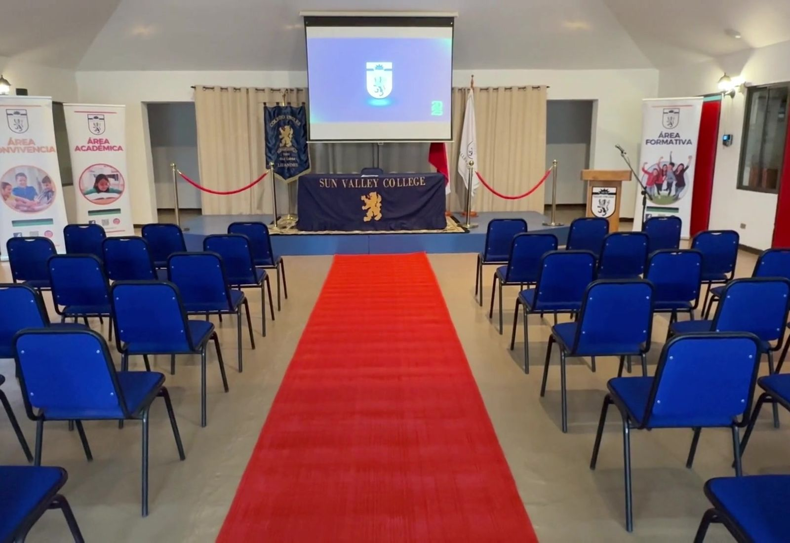
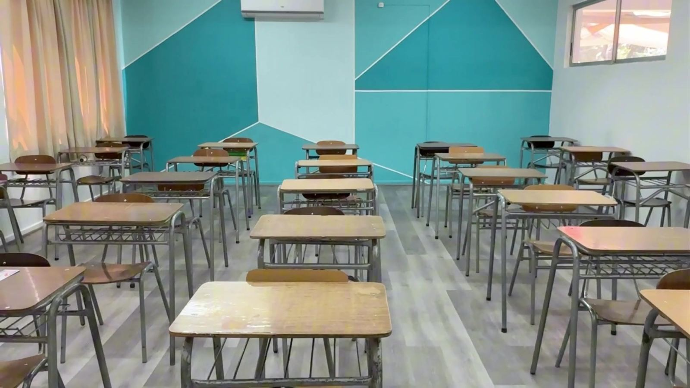

Nuestra mirada
Entendemos la admisión como el inicio de una relación de confianza y colaboración, basada en objetivos formativos compartidos y en el compromiso con el desarrollo integral de cada estudiante.
- Conocer, no seleccionar
Las evaluaciones buscan identificar fortalezas y necesidades para acompañar mejor la llegada de cada estudiante.
- Familia y colegio, aliados
El proceso considera a la familia y al estudiante, porque la educación es una tarea compartida.
- Transparencia
Información clara sobre vacantes, requisitos y resultados, respetando la capacidad de cada curso.
Seis etapas, de principio a fin
Las etapas 2, 3 y 4 pueden realizarse en una sola mañana durante la Jornada Sabatina de Admisión.
- Contacto y postulación
Completa el formulario o escribe a admision@cingles.cl. Te informamos vacantes, requisitos, documentos y fechas.
- Entrevista familiar
Con el equipo directivo: conocemos a tu familia y presentamos el Proyecto Educativo.
- Evaluación diagnóstica
Lenguaje, Matemática e Inglés, más una evaluación del Equipo Psicoeducativo según el nivel.
- Recorrido por el colegio
Visita guiada por salas, laboratorios, biblioteca, patios y espacios deportivos.
- Resultados
Te comunicamos formalmente la resolución por los canales institucionales.
- Matrícula
Firmas, certificados y bienvenida oficial a la comunidad.

Jornada Sabatina de Admisión
Todo el proceso en una mañana de sábado.
- Recepción y bienvenida
El equipo de gestión presenta el Proyecto Educativo Institucional.
- Evaluación diagnóstica
Lenguaje, Matemática e Inglés.
- Entrevista familiar
Diálogo con el equipo directivo.
- Recorrido por el colegio
Salas, espacios deportivos y áreas recreativas.
Próxima jornada: fecha por confirmar. Escríbenos y te avisamos apenas se abran los cupos.
Qué evaluamos, y para qué
Más que seleccionar estudiantes, nuestro objetivo es conocerlos para acompañar mejor su integración y aprendizaje.
- Lenguaje
- Matemática
- Inglés
- Evaluación psicoeducativa
- Desarrollo académico
Nivel de logro en Lenguaje, Matemática e Inglés, para orientar su incorporación al curso.
- Desarrollo personal
Intereses, fortalezas y trayectoria escolar del estudiante.
- Aspecto socioemocional
El Equipo Psicoeducativo identifica fortalezas, necesidades y eventuales apoyos.
Una conversación, no un examen
Entrevista familiar
Parte del proceso formal. Con el equipo directivo, para conocer a la familia, sus expectativas y los antecedentes que favorezcan la llegada del estudiante.
- Historia familiar y expectativas educativas
- Intereses, fortalezas y trayectoria escolar
- Eventuales necesidades de apoyo
- Cómo se valoran los principios del Proyecto Educativo
Reunión informativa
Opcional, antes de decidir. Puedes pedir una reunión con el equipo directivo o con el Área de Admisión para conocer el colegio.
- Antecedentes generales del colegio
- Presentación del Proyecto Educativo Institucional
- Funcionamiento y servicios educativos
- Respuestas a todas tus consultas
Un consejo: comparte toda la información relevante sobre tu hijo o hija. Nos permite planificar desde el inicio el mejor acompañamiento.
Qué necesitas para matricular
Si tu postulación es aceptada, formalizas la matrícula dentro de los plazos que te informaremos.
- Contrato de Prestación de Servicios Educacionales (firma del apoderado)
- Documentos institucionales vigentes (firma)
- Certificados y documentación del estudiante: identificación, certificados académicos y antecedentes exigidos por la autoridad educacional
- Certificado de deuda del colegio o jardín de procedencia
Los documentos pueden variar según el nivel. El Área de Admisión te entrega el listado actualizado para tu caso.
- Después de matricular
Recibes la información sobre inicio del año, uniforme, lista de útiles, canales de comunicación, NotasNet y los reglamentos vigentes. Ver documentos.
- Aranceles 2027
Consulta los valores de matrícula y colegiatura con el Área de Admisión: admision@cingles.cl.
Cursos, vacantes y tamaño de curso
| Ciclo | Estudiantes por curso | Inglés |
|---|---|---|
| Infant SchoolPlaygroup, prekínder y kínder | Hasta 30, con dos asistentes de aula | Primer acercamiento con canciones, rutinas y juego |
| Elementary School1° a 4° básico | Hasta 36 | Inmersión bilingüe progresiva: 1° (2025), 2° (2026), 3° (2027) y 4° básico (2028) |
| Middle School5° a 8° básico | Hasta 36 | Programa intensivo en las cuatro habilidades |
| High SchoolI° a IV° medio | Hasta 36 | Programa intensivo y ruta de certificaciones Cambridge |
Las vacantes dependen de la capacidad de cada curso y del movimiento de matrícula. Si un nivel está completo, puedes dejar tu interés y te contactaremos si se genera un cupo. Las familias de otros países participan del mismo proceso, según las normas chilenas de reconocimiento de estudios.
Cada estudiante, acompañado
- Proceso de acogida
Tutores, docentes y los equipos de convivencia y formación acompañan una integración gradual desde el primer día.
- Apoyos para aprender
Evaluamos cada situación de forma individual. Nuestro Equipo Psicoeducativo acompaña cuando se necesita.
- Diversidad cultural
Recibimos familias de otros países y respetamos la identidad cultural de cada una.
- Alianza con las familias
Esperamos participación, comunicación fluida y respeto por la normativa.
Preguntas frecuentes
Basadas en el documento oficial de Preguntas frecuentes de Admisión 2027 (PDF).
No encontramos preguntas con ese texto. Escríbenos a admision@cingles.cl y te respondemos.
Postulación
¿Cómo puedo postular a mi hijo o hija?
La postulación comienza con el contacto con el Área de Admisión (admision@cingles.cl) o con el formulario de esta página. Te entregamos la información de vacantes, requisitos, documentos y etapas.
Luego la familia participa en la entrevista, el estudiante rinde las evaluaciones de su nivel y se realiza un recorrido por el colegio.
¿Existen vacantes durante todo el año?
Depende de la capacidad autorizada de cada curso y del movimiento de matrícula durante el año. Si un nivel no tiene cupos, puedes manifestar tu interés para ser considerado si se genera una vacante.
¿El colegio realiza jornadas especiales de admisión?
Sí. En los períodos de mayor demanda organizamos Jornadas de Admisión un sábado en la mañana, donde en un mismo día se realizan la recepción, la presentación del Proyecto Educativo, las evaluaciones, la entrevista familiar y un recorrido guiado. Ver la Jornada Sabatina.
¿Cómo me mantengo informado sobre las fechas de admisión?
Publicamos las fechas, vacantes y jornadas en este sitio web y en nuestro Instagram. También puedes escribir a admision@cingles.cl.
¿Qué canales existen para resolver dudas durante el proceso?
El Área de Admisión te orienta sobre vacantes, requisitos, documentos y matrícula. Si la consulta lo requiere, la deriva al equipo directivo o al área que corresponda.
¿Reciben estudiantes provenientes de otros países?
Sí. Participan del mismo proceso, considerando las disposiciones de la autoridad educacional chilena sobre reconocimiento de estudios y documentación.
Evaluación y entrevista
¿Qué aspectos evalúa el proceso de admisión?
El nivel de desarrollo académico, personal y socioemocional del postulante, según su etapa educativa. Las evaluaciones diagnósticas incluyen Lenguaje, Matemática e Inglés.
Más que seleccionar estudiantes, buscamos conocerlos para acompañar mejor su integración.
¿Existe una entrevista con los padres o apoderados?
Sí, y es una de las etapas más importantes. El equipo directivo presenta el Proyecto Educativo, responde las inquietudes de la familia y conoce sus expectativas.
¿Qué busca conocer el colegio durante la entrevista familiar?
A la familia, sus expectativas y la trayectoria escolar del estudiante: sus fortalezas, intereses y eventuales necesidades de apoyo. Más que evaluar, busca construir una relación de confianza.
¿Qué diferencia hay entre la entrevista familiar y una reunión informativa?
La reunión informativa entrega antecedentes generales y presenta el Proyecto Educativo; es opcional. La entrevista familiar es parte del proceso formal de admisión y busca conocer a la familia y al estudiante.
¿Por qué el proceso considera tanto a la familia como al estudiante?
Porque la educación es una responsabilidad compartida. Cuando hay coherencia entre el hogar y el Proyecto Educativo, los estudiantes se desarrollan mejor.
¿Puedo pedir una reunión antes de decidir?
Sí. Puedes solicitar una reunión con el equipo directivo o con el Área de Admisión para conocer el colegio y tomar una decisión informada.
¿Puedo visitar el colegio?
Sí. Todas las familias pueden recorrer las salas, laboratorios, biblioteca, patios y espacios deportivos como parte del proceso. Agendar una visita.
Resultados y matrícula
¿Cómo sé si mi hijo o hija fue aceptado?
Al terminar las etapas, el colegio comunica formalmente el resultado por los canales institucionales. Si es aceptado, te informamos los plazos, documentos y pasos para la matrícula.
¿Qué documentos debo presentar para matricular?
En general: identificación del estudiante, certificados académicos, antecedentes exigidos por la autoridad educacional, certificado de deuda del colegio o jardín de procedencia y la firma del contrato y los documentos institucionales. El Área de Admisión te entrega el listado para tu caso.
¿Qué sucede después de ser aceptado?
Formalizas la matrícula en los plazos establecidos. Luego recibes información sobre el inicio del año, uniformes, lista de útiles, reglamentos y canales oficiales de comunicación.
¿Qué documentos institucionales reciben las familias?
El Proyecto Educativo Institucional, el Reglamento Interno de Convivencia Escolar, el Reglamento de Evaluación y Promoción y los protocolos vigentes. También están en Documentos.
Vida en el colegio
¿Cuál es el número máximo de estudiantes por curso?
En Infant School (Playgroup a kínder), hasta 30 estudiantes por curso, con dos asistentes de aula. Desde 1° básico hasta IV Medio, hasta 36 estudiantes por curso.
¿Qué diferencia a Sun Valley College?
Una formación integral que combina excelencia académica, desarrollo humano, bilingüismo, innovación pedagógica y formación en valores, con atención cercana a las familias y equipos especializados.
¿Cómo es la adaptación de los estudiantes nuevos?
Desarrollamos un proceso de acogida gradual. Tutores, docentes y los equipos de convivencia y formación acompañan a cada estudiante para que se sienta seguro e integrado.
¿Puede ser admitido un estudiante que requiere apoyos para aprender?
Evaluamos cada situación de forma individual. Contamos con un Equipo Psicoeducativo interdisciplinario. Es importante que la familia comparta toda la información relevante para planificar el acompañamiento desde el inicio.
¿Qué compromiso espera el colegio de las familias?
Participación activa, comunicación fluida y respetuosa, respeto por la normativa y apoyo en el hogar a los valores del Proyecto Educativo.
Da el primer paso
Completa el formulario y el Área de Admisión te contactará para coordinar la entrevista, las evaluaciones y el recorrido.
- Área de Admisiónadmision@cingles.cl
- Teléfono+56 9 2604 2383
- WhatsAppEscríbenos
- HorarioLunes a jueves 8:00–18:00 · viernes 8:00–15:00
Postula aquí
Déjanos tus datos y el Área de Admisión te llamará para coordinar la entrevista, las evaluaciones y el recorrido. Los campos con * son obligatorios.